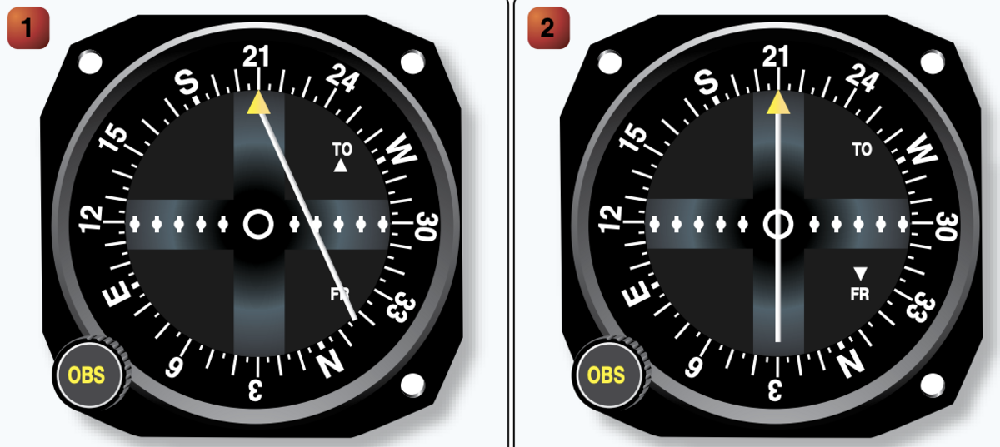

Lecture 10 · PHAK 16
Navigation
Finding your way with landmarks, the VOR and its needle, and the limits of GPS.
Pilotage & dead reckoning
Pilotage
Navigating by reference to visual landmarks (rivers, roads, towns).
Dead reckoning
Computing position from heading, speed, time and distance (the E6-B job).
Chart reading
On a sectional, 1 minute of latitude = 1 NM, so the side latitude scale doubles as a distance ruler. Headings/courses you read are true; headings you hear (ATC, VOR radials, runways) are magnetic — "read it, it's true; hear it, it's magnetic."
VOR navigation
A VOR transmits 360 radials — magnetic courses from the station. The Course Deviation Indicator (CDI) shows where your selected course is relative to you.

- No TO/FROM flag = you're perpendicular to the radial; the deflection still shows which side you're on.
- Position fix: center the needles on two VOR radials (FROM) from two different stations — where they cross is your position.
- Receiver check (VOT): tune a VOT test signal and center the needle — OBS 0°/360° reads FROM, OBS 180° reads TO, accurate within ±4°.
GPS & RAIM
- GPS limitation: it knows your position and track, but not your aircraft heading (where the nose points).
- RAIM (Receiver Autonomous Integrity Monitoring) verifies the GPS signal is still accurate.
- Out-of-date database? Verify your flight-plan waypoints against a current official source — a VFR sectional chart or the Chart Supplement U.S.